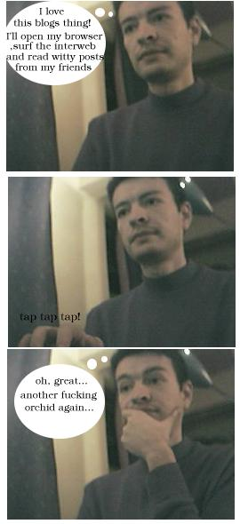
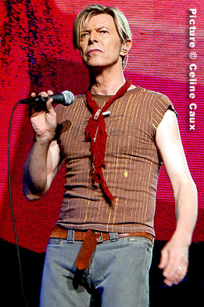
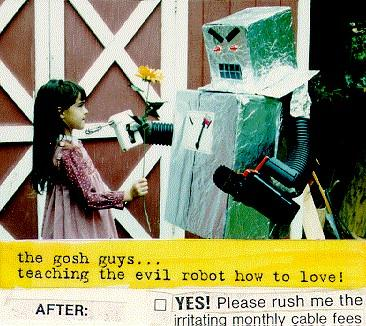

about me
 Software:
Software:
Torta
Karmack
Plata
FUmanchu!
Rants:
AboutMe
Blogging
El origen del hombre americano
Propositos2006
Propositos2007
SWFing
Pictures:
Sicilia -
thumbs
Visita Dimo 2007 -
thumbs
Tokyo -
thumbs
Barcelona -
thumbs
Lisbon -
thumbs
Gilberto Gil -
thumbs
Visita Fidel -
thumbs
Hiver -
thumbs
Dogs -
thumbs
Italy -
thumbs
Eurockeennes -
thumbs
Grenoble -
thumbs
Chipie -
thumbs
Place aux Herbes -
thumbs
Eek Friends:
 Alejo Alejo
Javier
Nelson
Old Posts:
Archive
Created with:
emacs
bash
libXSLT


 Dimo's Art
Quebec Hispano
Dimo's Art
Quebec Hispano
|
|
2003 - November |
|

|
|
Si todo sigue su curso normal, viajare a Colombia el 13 de diciembre. Lista de cosas por hacer:
- Verme con "los muchachos" (los amigos del colegio) en la casa de Fabio, a jugar algun juego de mesa y ver peliculas mientras se toma trago.
- Verme con los uniandinos, alejo, pong, vulpecula, viralex, hernan, etc
- Verme con otros amigos (que no deben sentirse dejados de ultimos, sino dificiles de categorizar).
- Tomar bus y transmilenio.
- Almorzar donde mi abuela hasta reventar.
- Comer manimoto, bombombum, chitos, empanada, arepa, pastel gloria, gaseosa, pan rollito, roscon, fruna, pizza de carrito, trocipollo, paleta de agua y otros manjares.
- Ver harta television colombiana.
- Comerme un corrientazo, tipo los de El Chivo Loco.
- Escuchar "el zoologico de la magnana" y otras joyas de nuestra radio.
- Leer el tiempo, semana, cambio. En papel, no en internet.
- Pasar por Los Andes a ver que hay de nuevo, si es que me dejan entrar.
- Hablar sobre cosas absurdas con seriedad con la gente (imposible de hacer en Francia).
Acepto sugerencias
|
|

Luego del concierto de Bowie, no me queda la menor duda : este hombre es un genio. Cuando sea grande quiero ser David Bowie. Bueno, excepto si eso significa convertirme en un icono del transvestismo glam.
En fin, para borrar cualquier duda sobre la genialidad de este artista, los invito a descubrir como Bowie habia anticipado desde hace mucho tiempo la llegada de los blogs. Escuchemos :
There's a brand new talk
But it's not very clear
That people from good homes
Are talking this year
It's loud and it's tasteless
I've not heard it before
Alguna duda?
La lista de canciones, con el unico objeto de mortificar al verdadero fan, fue la siguiente :
01 Rebel Rebel
02 New Killer Star
03 Reality
04 Fame
05 Cactus
06 Afraid
07 China Girl
08 The Loneliest Guy
09 The Man Who Sold The World
10 Hallo Spaceboy
11 Sunday
12 Under Pressure
13 Life On Mars?
14 Ashes To Ashes
15 The Motel
16 Loving The Alien
17 Never Get OId
18 Changes
19 I'm Afraid Of Americans
20 "Heroes"
(Encore)
21 Five Years
22 Suffragette City
23 Ziggy Stardust
|
|
|
Bogota, 19 Dic, 2003. Incidents between Zarpa Group and Evil
Corp are already ancient history, according to top executives from both organizations. It is believed Evil Corp tried to take over Zarpa Group in the past, using one of its companies, "Expresos del Huila", to buy actions from Zarpa illegally. According to our sources, Evil Corp accepted to include Zarpa again into its elite list. Zarpa Group's president denied accusations his company would include secret backdoor technology from Evil Corp in future releases of its software.
|
|

- Ver fotos de gente que uno solo conoce por internet siempre es una experiencia
desgarradora. Lastima que Gavo no salga en las fotos. Gracias, Alejo, y Gavo, de todas formas.
- Doy por muertos, entre muchos otros, los blogs de los gemelos maravilla, Ugo y Drayru. Lastima, entre tanto nuevo blog cargado de escritura barroca y provocacion superficial, hacen falta clasicos como "Meando con Fito Paez".
- Empece la coleccion de DVDs de Tintin. Ya tengo "Le Lotus Bleu" y "Tintin au Tibet".
|
|
|
|
|
Sorprendente este
viejo articulo de Guy Steele, inventor tanto del lenguaje de
programacion scheme, como del lenguaje de programacion java. Es
interesante anotar que aunque el articulo es del 98, aun no hay genericos en java (aunque vendran
con la version 1.5) ni es posible sobrecargar operadores (y creo que eso
nunca lo veremos).
Lo mas sorprendente es cuando habla de scheme como su mejor intento
por hacer algo que hoy en dia no cree posible que se pueda hacer!
Lectura Obligatoria. Entrevista complemantario aqui.
Otra lectura obligatoria es el famoso "Worse is
Better", de Richard Gabriel, otro de de los heroes del panteon de Lisp, y el mismo del Feyerabend
Project abogado por Tagae
y criticado por Alejo en su
"reinventing
computer blah".
Para terminar, los dejo con estas dos gemas de los autores anteriores
:
Richard Gabriel declara que Objects
have Failed.
Guy Steele responde Objects
have clearly succeded.
|
|
|
What in hell is THIS???
|
|
|
Apoye The Open List con el siguiente boton en su pagina:
|
|
|

 Save this post]
Save this post]